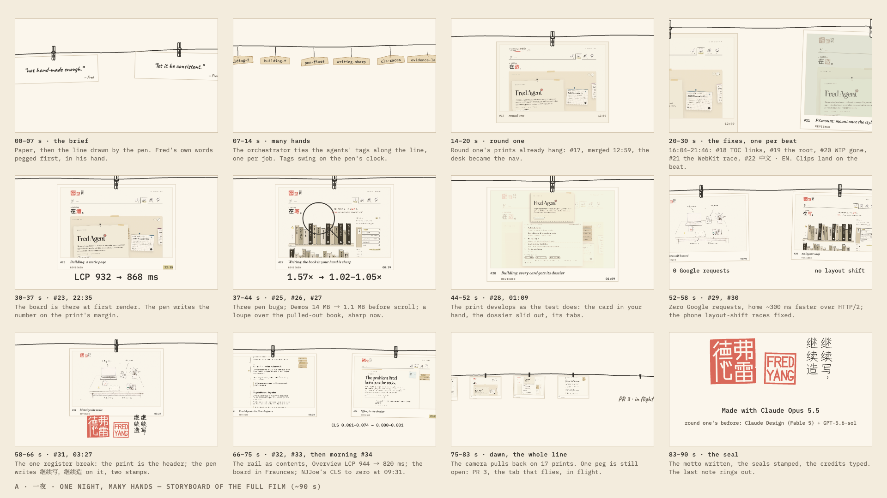
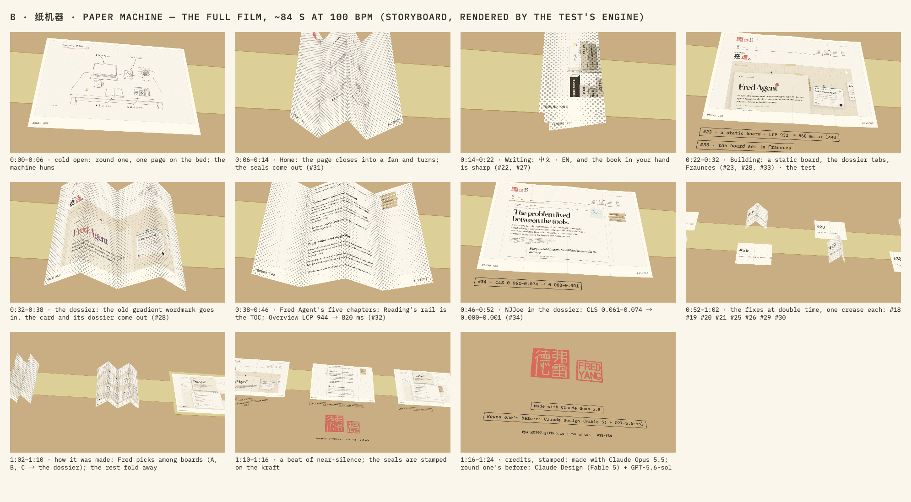
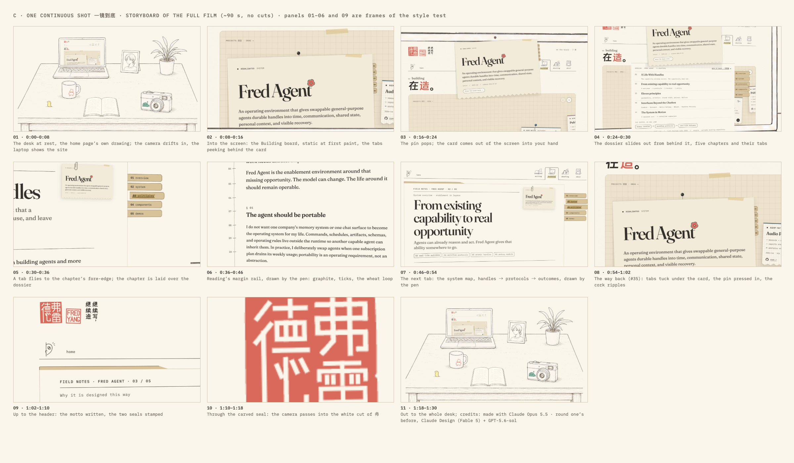

Three style tests
Three directions for a 60–90 s film about this round of the site, each tested as a finished 12–15-second piece: rendered frame by frame from code in headless Chromium, at 1920×1080 and 60 fps, with a score synthesized from code on the same cue list as the picture. Pick one (or name the parts to combine); nothing goes further until you do. Treatments, the design records and how to regenerate are in README.md.
The whole film, one dossier, one camera
2:07 at 1280×720, 30 fps, draft sound. The site's real motion, recorded live with real input on origin/main (#35) and on 6237120 (main before #17), printed on sheets in a kraft dossier. The camera never cuts. Inside each sheet the site carries continuity itself (the desk becomes the nav, the tab moves, #35's flight, the way back); between the three sessions the finished sheet is pulled aside to the left, the way a chapter gives way to the next. The before is always the page underneath: at the moments that compare, the top page is flipped up like a pad's, and the old site is seen doing the same thing at the same moment. Structure and continuity: rough/README.md; every shot and cue: rough/TIMING.md.
Does the structure hold: one dossier, three live sheets pulled aside in turn, the old site always under the page? And should stage 2b record the visit as one session, so the two sheet changes go and the whole film is literally one shot?
一夜A · One night, many hands
The round as the night it happened: every merged PR pegged over the round-one print it replaced, at its real merge time, tagged with the agent that made it, developing the way the Gallery's prints develop.
- distance
- low
- carrier
- line-led
- resolution
- moderate
- anchor
- the peg's bite: held poses against the paper's swing
- technique
- Canvas 2D; analytic springs and pendulums; the site's own pen.js and the lockup's stroke paths
把这一轮当作那一夜来讲：每个合并的 PR 都用夹子夹在它替换掉的第一轮照片前面，时间是 GitHub 上真实的合并时刻，挂着做它的那个代理的小吊牌，像画廊里的照片一样慢慢显影。线条是主角：绳子、夹子、审过的勾、写出来的格言都是同一支笔；颜色只有照片本身、显影液的灰绿、最新一张的麦色高亮，和结尾唯一一次珊瑚红的印章。
纸机器B · Paper machine
The old pages go into a paper machine: each is folded up, turned over, and unfolds as the new page, because the new page was printed on its back. Cut to a beat made of the site's own sounds.
- distance
- medium
- carrier
- colour-led
- resolution
- moderate
- anchor
- the crease that stays after the sheet is flat
- technique
- Three.js; a zigzag fold on springs, both faces in one shader, halftone only where paper tilts; the foley is the drum kit
旧页面进纸机：收成手风琴、立成一扇、翻个跟头、再打开，出来的就是新页面，因为新页面本来就印在它的背面。颜色是主角：牛皮纸、奶油纸、麦色带子，珊瑚色只留给最后那一枚印。调子只用数得清的网点，只在纸倾斜或折痕合拢的地方出现；折过的痕迹一直留着，是机器（也是手）的证据。节奏全部来自网站自己的声音：落纸、合折、翻转、盖章，同一条 100 BPM 的时间线。
一镜到底C · One continuous shot
One unbroken camera move through Fred's world: from the desk into the laptop, into the corkboard, a card lifts into your hand and its dossier slides out, a tab flies to the chapter and the margin rail draws.
- distance
- low
- carrier
- hybrid
- resolution
- rich
- anchor
- paper coming out of the screen into the room
- technique
- Three.js paper theatre of the real desk layers and page pieces; one Hermite camera, zoom in log space; 15 s, no cuts
这一镜全部由弗雷德自己的东西构成：主页那张书桌画拆成纸片分层立起，第一帧与原画严丝合缝；笔记本屏幕里是真实的 Building 页面，卡片被拔掉图钉后从屏幕里"出来"到你手上，档案从卡片背后滑出，索引签飞到章节的书口，笔画出页边的轨道。纸走物理的钟，图钉、刻度和笔走手的钟。镜头只有一个，没有光源，没有渐变，景深只靠纸与纸的叠放；珊瑚色留到最后，落在两方印上。
A · 一夜 · One night, many hands

B · 纸机器 · Paper machine

C · 一镜到底 · One continuous shot

Which one becomes the full film: A, B or C? If you would combine, name the part (say, C's one camera move with A's merge-time clock rolling in the corner).
Since these were cut, PR 3 merged as #35 (10:21, 30 Sep), so stage 2 can film the tab's flight and the way back from the live site. The tests stop at #34.